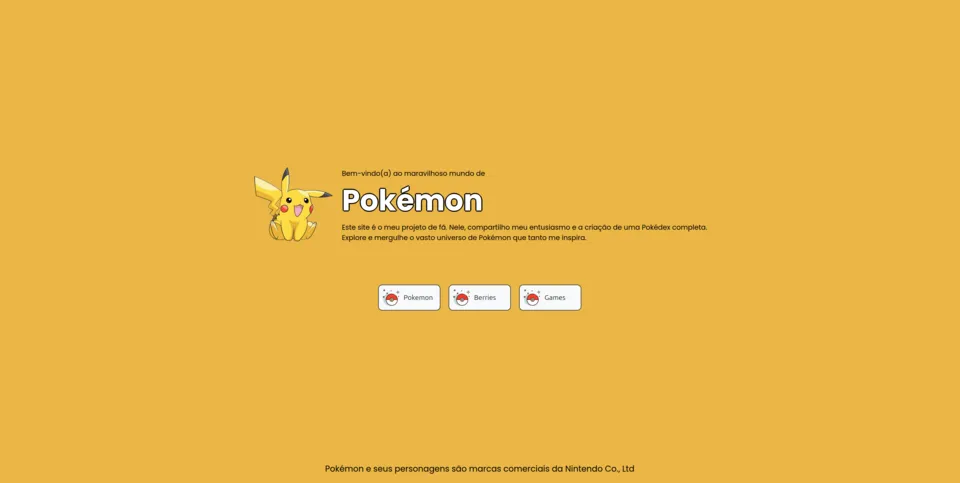
01
Pokémon
Catálogo interativo com consumo da PokeAPI e interface responsiva.
Desenvolvedor Full Stack
Sou Robert, desenvolvedor de software formado em Sistemas da Informação. Transformo necessidades reais em aplicações modernas, escaláveis e acessíveis.
01 — Sobre mim
Minha trajetória começou em suporte e infraestrutura de rede. Essa experiência trouxe uma visão prática de sistemas, usuários e operação — hoje aplicada no desenvolvimento de soluções completas.
Sou formado em Sistemas da Informação pela Universidade Estácio de Sá e atuo com desenvolvimento web e aplicações, criando funcionalidades que resolvem problemas concretos.
Tenho interesse em arquitetura limpa, interfaces consistentes, boas práticas e tecnologias que façam sentido para cada desafio.
02 — Tecnologias
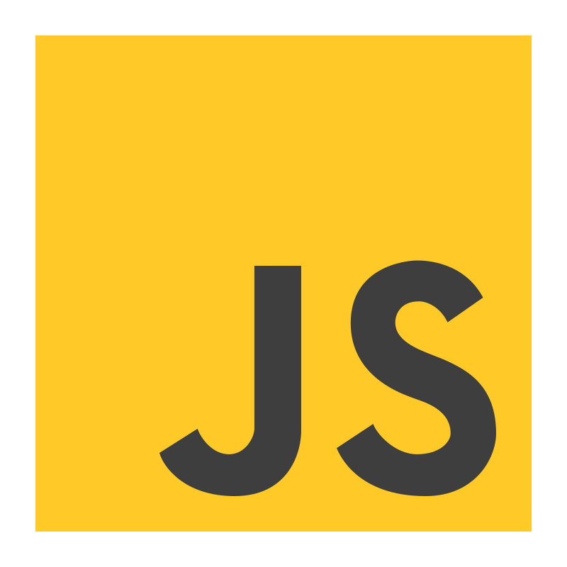
JavaScript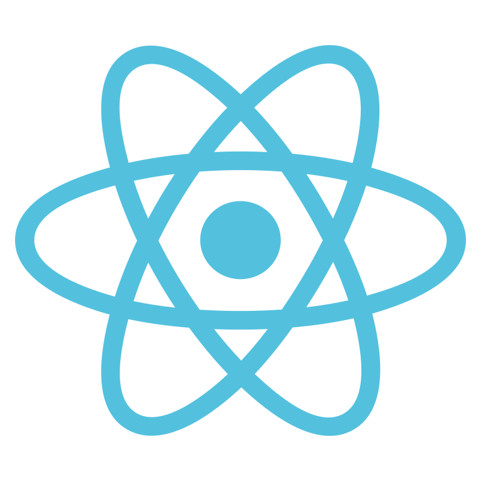
React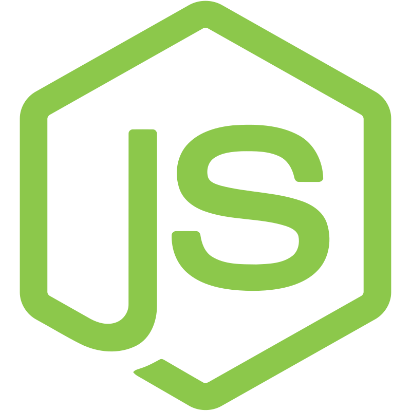
Node.js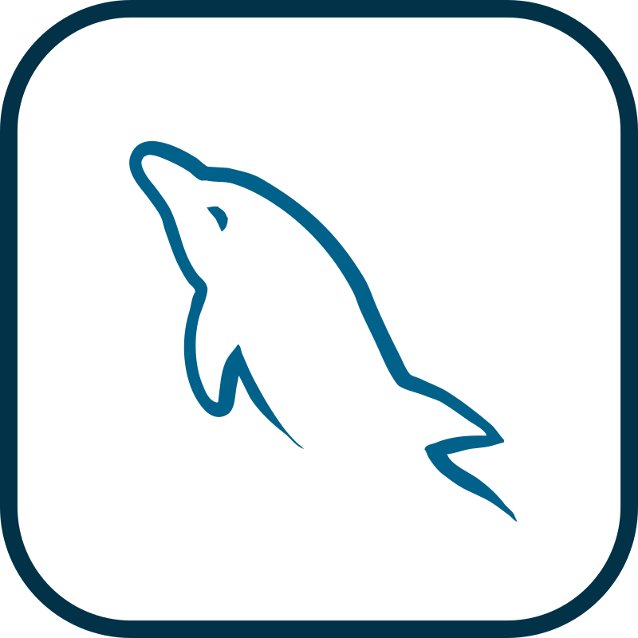
MySQL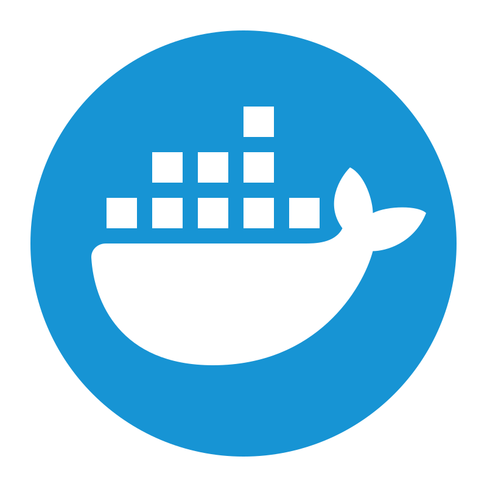
Docker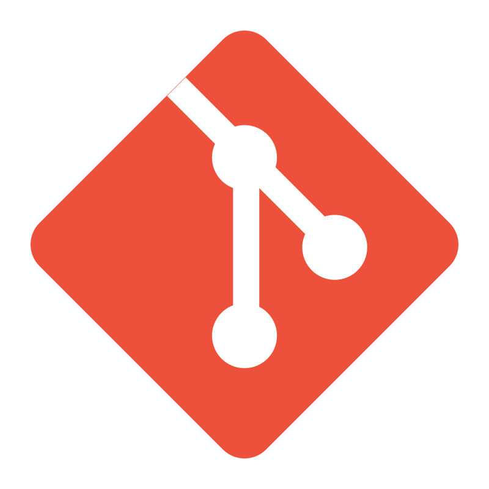
Git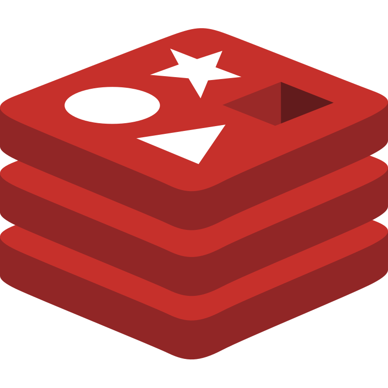
Redis03 — Projetos

01
Catálogo interativo com consumo da PokeAPI e interface responsiva.
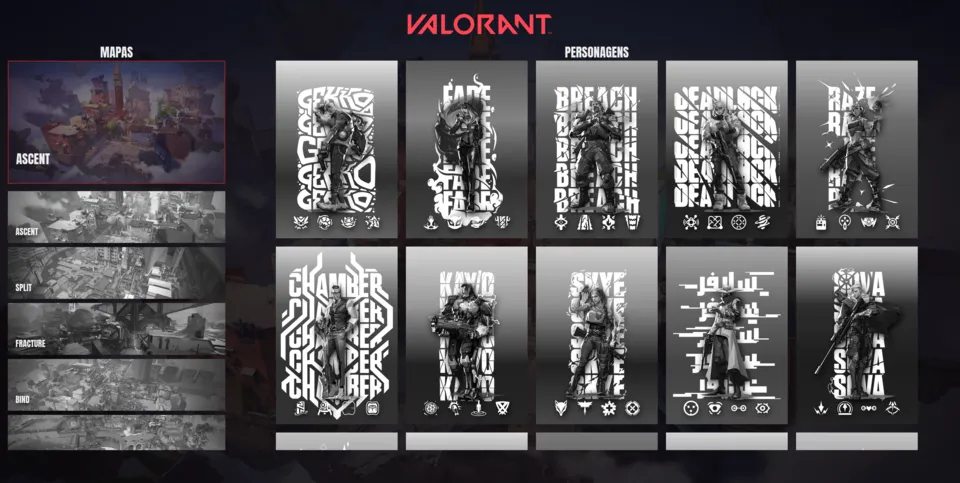
02
Exploração de agentes e dados oficiais da API do jogo.
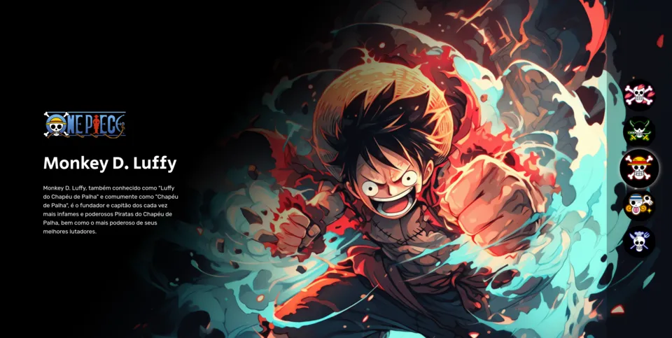
03
Experiência visual responsiva inspirada no universo da série.
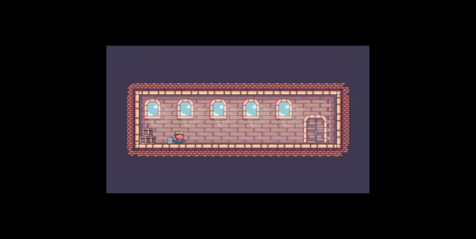
04
Minijogo criado para praticar lógica, animações e eventos.
04 — Contato